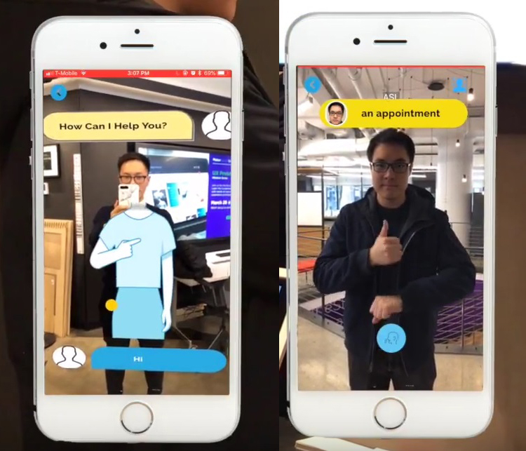

AR&VR
Healthcare
With this AR technology, doctors can now easily access a patients data. After scanning the QR Code, they will be sent to a login form. Where they can login with the credentials given by the hospital. This prevents everyone from viewing sensitive data. Then it will show the data on the QR code, they will even be able to open it as a document on their phone. This also prevents confusing the patients data, which sadly still happens.


Cars
I think in the future, AR technology can recognize more and more things in real life. Like the sign with the max speed allowed and be able to follow the license plate and calculate its speed. This way it will be easier for the police to monitor the roads. As much as it is annoying to get a fine, it’s so important to get the rulebreakers the consequences. So they stop driving fast, this will save many more lives in the future.

Public Transport
Usually, the bus or train has a name on the side to indicate its destination. But sometimes you might have missed it. With this QR code on the side, next to every door, you will be able to see its destination, departure time and the next vehicle with its destination as well. With this you’ll be able to always know the information you want to know. In the image I put the code on the lower side, other models or vehicles might be able to put the code higher. So people can’t walk through your code and camera.
Research
The project I found was a AR one. It detects the sign language of the person in front of the camera. The app combines computer vision with AR to capture specific sign language hand gestures performed in front of the camera and provide a real-time translation in the native language of the user. Developed by Heng Li, Jacky Chen, and Mingfei Huang.
This project took an interest on me because I’m myself hearing impaired. Even though I didn’t have to learn sign language, was always a bit interested in how it worked. Now with this app it is even easier to learn and understand! This is great for the sign language community!
Link to project